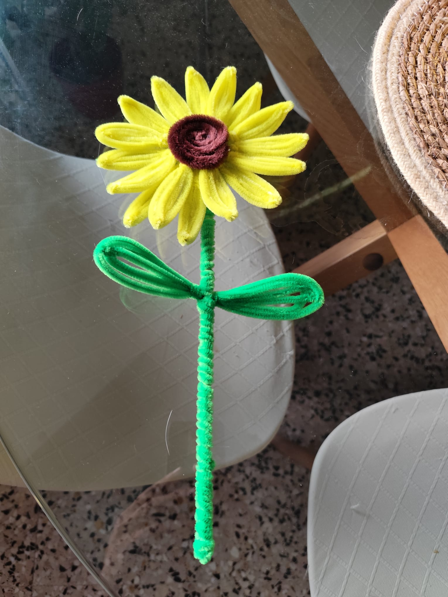
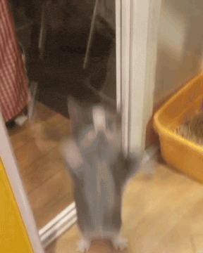
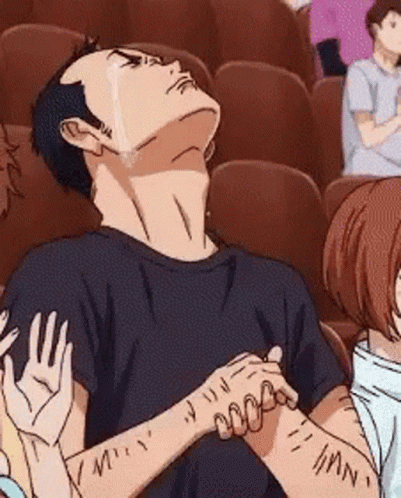
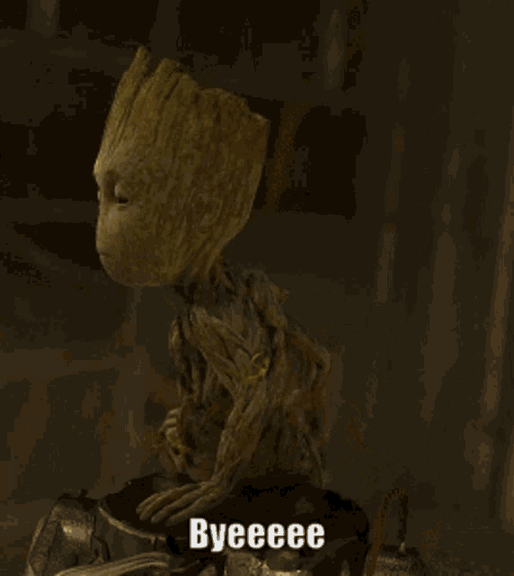

hay algo que quiero mostrarte
te dejo esto aquí
y que algo bueno crezca donde estés
Feliz día de las flores amarillas.

Sé que quizás esto no tenga mucho valor para ti, por eso pensé en hacerte esta flor a mano, porque creo que es algo que sí te hubiera sacado una sonrisa y adoro tu sonrisa.
Durante este tiempo indiscutiblemente fuiste alguien especial para mí.
Y no quiero hacer las cosas de golpe y tampoco no hacer las cosas que debo hacer, por eso siendo o no el momento.
Me gustaría poder volver a hablar contigo y esta vez hacer las cosas bien.
Mi humilde reacción:

Esta vez quiero que las cosas sean diferentes pero para mejor y me esforzare para que no te equivoques con la decision.
Creo que los problemas que tuvimos todos tienen solución, y esto no es para volver a ser pareja.
Sinceramente, me gustaría que, si se diera la ocasión, pudiéramos volver a conectar de forma natural, sin añadir ninguna presión en el proceso.
Tengo sentimientos cálidos cuando pienso en ti.
Simplemente quiero poder retomar algo de contacto y hacer las cosas bien, como para que puedas contarlo con una sonrisa.
Realmente te mereces mis disculpas por una infinidad de cosas, pero ahora no es el momento para ello. Aunque tambien quiero agradecerte por todo, me di cuenta tarde que me equivoque en muchas cosas.

Me alegra poder tener la oportunidad de volver a hablar, escucharte y espero que verte
GRACIAS
Gracias a Jesus, Gracias a las Energias, Gracias a los Libros, Gracias a Ti y en paz con el universo al fin.

Quizás no es el momento o simplemente es el fin, de todas formas sabes dónde estoy y aunque no nos crucemos de vuelta.
Te deseo lo mejor.